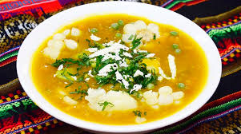
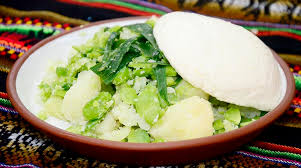
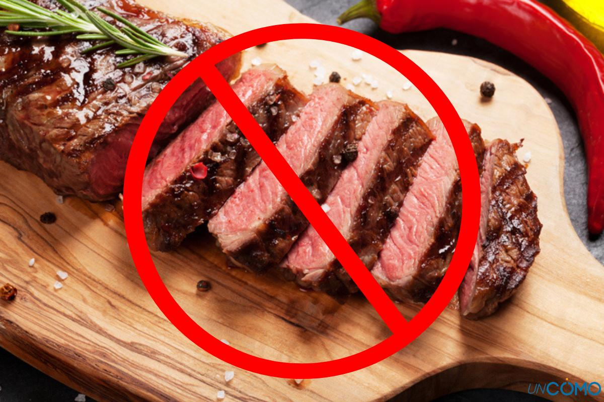

En Viernes Santo se consume 12 platos típicos representado a los apóstoles que acompañaron a Jesucristo en la Última Cena, cada uno de estos platos se exime la carne roja, entre los platos que se consumen son: quesohumacha; carbonada; ají de papalisa; papas a la huancaina; sopa de camarones; ají de cochayuyo; ají de arvejas; ; plato paceño; wallake de pejerrey, trucha, mauri o karachi; trucha o pejerrey; y arroz con leche.

POR QUE NO SE COME CARNE EN SEMANA SANTA
De acuerdo con la tradición cristiana, Jesús entregó su propia carne en sacrificio el Viernes Santo, por lo que se estableció como norma no comer carne en dicho día. La abstinencia de carne proviene de tiempos antiguos y comienza antes de la Semana Santa, estando directamente vinculada con la Cuaresma, el periodo litúrgico previo.
La Cuaresma se inicia el Miércoles de Ceniza y dura 40 días, marcando un hito en la vida de los creyentes. Este año, la Cuaresma abarca desde el 14 de febrero hasta el 28 de marzo, Jueves Santo. Con el comienzo de la Cuaresma, los fieles adoptan ciertas modificaciones en su estilo de vida, incluyendo el ayuno y la abstinencia en su alimentación.
La principal razón para no comer carne durante la Cuaresma es honrar a Jesús, quien pasó 40 días en el desierto sin ingerir alimento ni bebida. En la Edad Media, la Iglesia estableció que la carne de animales de sangre caliente debía evitarse todos los viernes, así como los miércoles durante la Cuaresma, una norma seguida históricamente por los católicos.
Esta norma fue modificada en la década de 1960 por el Concilio Vaticano II, que determinó que ahora es recomendable evitar la carne únicamente los viernes de Cuaresma, incluidos el Viernes Santo y el Miércoles de Ceniza. Si bien muchos católicos dejaron de abstenerse de comer carne durante todo el año, algunos aún respetan esta norma. La alternativa preferida a la carne suele ser el pescado, que también tiene un simbolismo en el cristianismo:
La Biblia relata que Jesús realizó el milagro de alimentar a 5.000 personas con tan solo dos peces y cinco panes. Los cristianos también empleaban el símbolo del pez para identificarse entre ellos durante periodos de opresión. Muchos de los discípulos de Jesús eran también pescadores, entre ellos San Pedro, y el alimento estaba ampliamente disponible en aquella época, ya que vivían cerca del Mar de Galilea.
La Cuaresma se inicia el Miércoles de Ceniza y dura 40 días, marcando un hito en la vida de los creyentes. Este año, la Cuaresma abarca desde el 14 de febrero hasta el 28 de marzo, Jueves Santo. Con el comienzo de la Cuaresma, los fieles adoptan ciertas modificaciones en su estilo de vida, incluyendo el ayuno y la abstinencia en su alimentación.
La principal razón para no comer carne durante la Cuaresma es honrar a Jesús, quien pasó 40 días en el desierto sin ingerir alimento ni bebida. En la Edad Media, la Iglesia estableció que la carne de animales de sangre caliente debía evitarse todos los viernes, así como los miércoles durante la Cuaresma, una norma seguida históricamente por los católicos.
Esta norma fue modificada en la década de 1960 por el Concilio Vaticano II, que determinó que ahora es recomendable evitar la carne únicamente los viernes de Cuaresma, incluidos el Viernes Santo y el Miércoles de Ceniza. Si bien muchos católicos dejaron de abstenerse de comer carne durante todo el año, algunos aún respetan esta norma. La alternativa preferida a la carne suele ser el pescado, que también tiene un simbolismo en el cristianismo:
La Biblia relata que Jesús realizó el milagro de alimentar a 5.000 personas con tan solo dos peces y cinco panes. Los cristianos también empleaban el símbolo del pez para identificarse entre ellos durante periodos de opresión. Muchos de los discípulos de Jesús eran también pescadores, entre ellos San Pedro, y el alimento estaba ampliamente disponible en aquella época, ya que vivían cerca del Mar de Galilea.